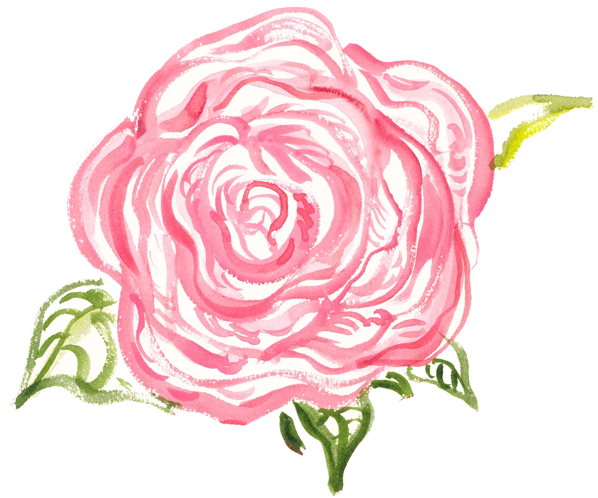
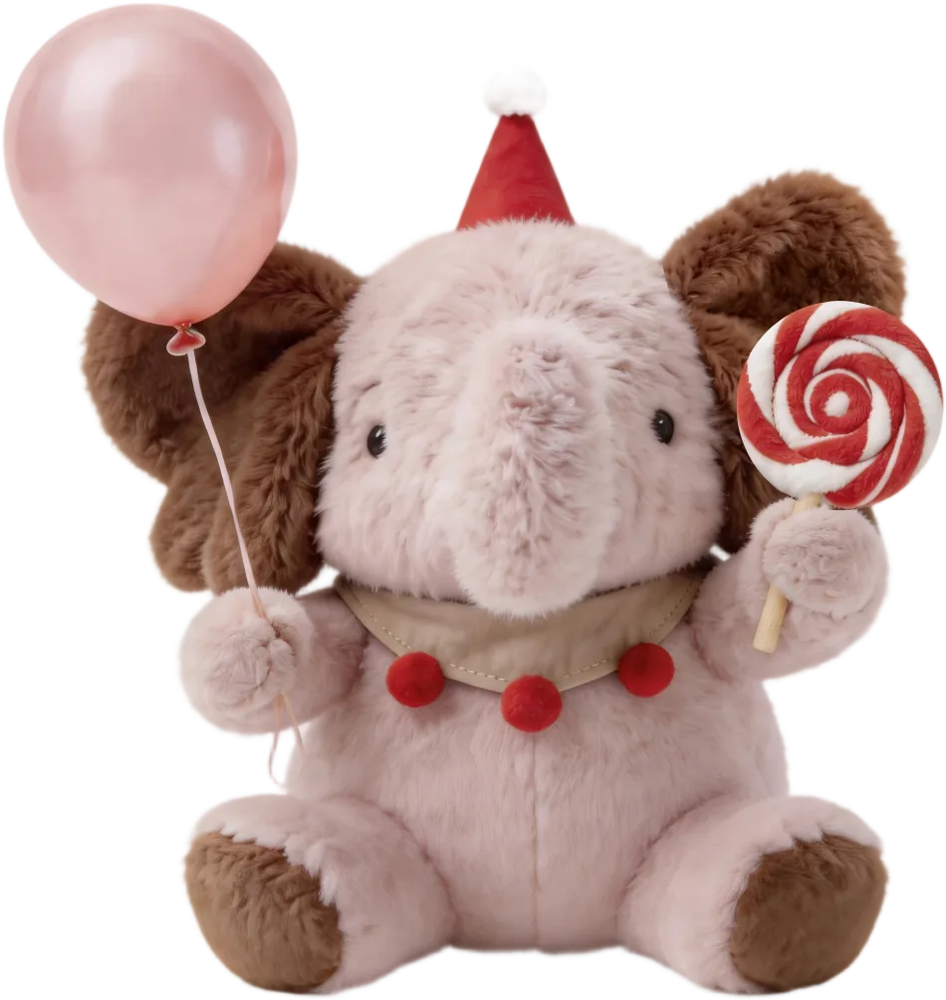

不要将就解
先看清结果与目标的差距。团队不把“完成了”“差不多”当作答案，而是继续追问：哪一步偏了，哪些方法有效，哪些判断需要重新验证。
玫瑰大将 Kiri 专访
“我已经做过十年的双十一了，
但在玫瑰，我开始从品牌视角参与双十一。”
2026.10
先理解行为准则，再进入人物故事，最后回到每个人都能参与的文化日常。
【极致引领】以突破为起点，以迭代为方法。它落在每一次目标拆解、现场判断与复盘中。
先看清结果与目标的差距。团队不把“完成了”“差不多”当作答案，而是继续追问：哪一步偏了，哪些方法有效，哪些判断需要重新验证。
旧经验提供起点，最终结果决定下一步。围绕真实问题持续沟通和验证，把一次现场解法沉淀为可复用的方法。
复盘时多问一句：这次交付，哪里还能更准、更细、更完整？
“我已经做过十年的双十一了，
但在玫瑰，我开始从品牌视角参与双十一。”
入职玫瑰一年半，他已经与团队经历真实战役。过去的经验让他熟悉“如何卖出更多”，来到玫瑰后，他把问题放进品牌长期建设里：帮助用户买对，也和团队一起创造值得被选择的好东西。
当被问到为什么选择玫瑰，他用“缘分”概括这段关系。个人经验与品牌发展的需要在这里相遇。
目标有完成得好的，也有不及预期的。他要求团队在每场战役结束后回到真实复盘中：目标设定是否合理，哪些策略有效，外部环境带来了什么变化。822 场次又从“导演视角”重新调整直播玩法。
他最担心团队心态散掉。但运营中心大部分伙伴保持稳定，玫瑰的底层色彩在这群伙伴身上体现得很扎实。
“目标没达成，当时的心态会觉得是个下降的过程。
在这种低谷期，最害怕的是团队心态散了。
但运营中心大部分伙伴还是比较稳定的。”
去年双十一，有伙伴前一晚跟播到凌晨，第二天赶最早一班火车返汉，马上拾起下一阶段待办。
连续样品支持
上海直播中心面对人手紧张，主动协调伙伴，先接住现场执行。样品支持要核对品序、摆放样品、递送物料，并及时归位配件。他称这是“体力加脑力”。
5天
预热加购
1天
正式直播
3天
下一场准备
交付完成后，团队没有把这次补位当作一次性硬扛。他们提前预警双十一的人手问题，继续推动人员安排、工作流程和跨团队协作优化。
让下一次少一点硬扛，多一套方法。
“我觉得两到三年内，最大的愿望就是玫瑰的第二梯队能够真正成长起来，玫瑰是玫瑰的增长曲线也能够自运转起来。
不是所有事情都要依赖某一个人。各个部门先把自己的事情高效运转起来，需要协同的时候再协同。”
他期待的第二梯队，意味着经验有人承接，方法可以复制，各部门先高效运转，在真正需要的时候形成协同。个人能力由此进入团队，团队也有机会形成长期稳定的增长能力。
“吐完槽之后，还是要回到最好的状态，享受工作带来的成就感。”

最近哪一次协作，
让你觉得被接住了？
扫码填写案例，或发送至 HR 邮箱
aroseisarosehr@aroseisarose.cn
每一个被看见的日常，都在让文化发生。

扫码，用1分钟写下
详细规则与奖励以表单内说明为准